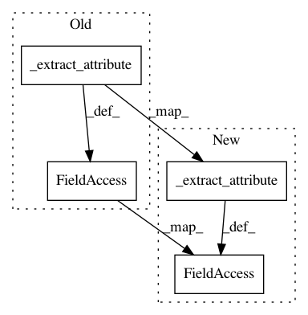

6fd2cfad2dc0432b5c5d271ecd89b8882f7ff068,reframe/core/schedulers/slurm.py,SlurmNode,__init__,#SlurmNode#Any#,415
Before Change
self._name = self._extract_attribute("NodeName", node_descr)
self._partitions = set(self._extract_attribute(
"Partitions", node_descr).split(","))
self._active_features = set(self._extract_attribute(
"ActiveFeatures", node_descr).split(","))
self._states = set(
self._extract_attribute("State", node_descr).split("+"))
After Change
self._partitions = self._extract_attribute(
"Partitions", node_descr, delim=",")
self._active_features = self._extract_attribute(
"ActiveFeatures", node_descr, delim=",")
self._states = self._extract_attribute("State", node_descr, delim="+")
def __eq__(self, other):
if not isinstance(other, type(self)):
In pattern: SUPERPATTERN
Frequency: 3
Non-data size: 4
Instances
Project Name: eth-cscs/reframe
Commit Name: 6fd2cfad2dc0432b5c5d271ecd89b8882f7ff068
Time: 2018-12-03
Author: manitaras@cscs.ch
File Name: reframe/core/schedulers/slurm.py
Class Name: SlurmNode
Method Name: __init__
Project Name: eth-cscs/reframe
Commit Name: 5b02f4aec5992428ec092a430c43394e70d4ae93
Time: 2019-02-27
Author: manitaras@cscs.ch
File Name: reframe/core/schedulers/slurm.py
Class Name: SlurmNode
Method Name: __init__
Project Name: eth-cscs/reframe
Commit Name: f0be29988d637f2d40616e4f857648f87bc77451
Time: 2018-11-27
Author: manitaras@cscs.ch
File Name: reframe/core/schedulers/slurm.py
Class Name: SlurmNode
Method Name: __init__